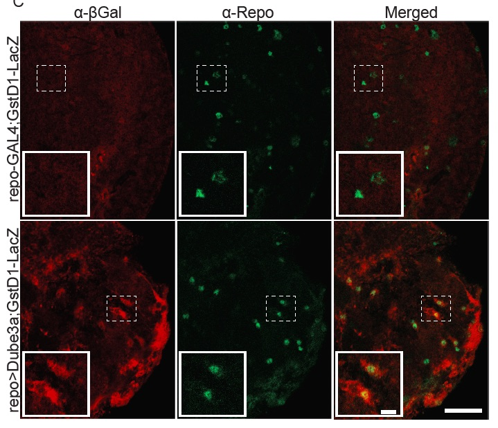
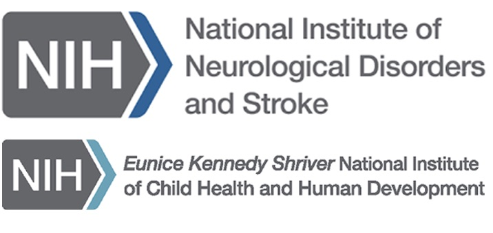

The University of Tennessee Health Science Center
Overview of Research Projects
My laboratory utilizes the powerful genetic model organism Drosophila melanogaster (fruit flies) and a unique collection of stem cells generated from teeth (Dental Pulp Stem Cells) to investigate the functions of genes involved in human neurogenetic disease. Our main focus is the study of genes related to chromosome 15q disorders (Angelman, Prader-Willi and Dup15q syndromes) as well as autism spectrum disorders (ASD) and epilepsy. These disorders are interrelated at the molecular level and one of the goals of our laboratory is to identify the genes and proteins regulated by one or more of the proteins causing autism and seizure phenotypes.
Current Ongoing Research Projects
Drosophila Studies of Human Disorders

Approximately 3-5 % of all autism cases result from maternally derived duplications of a region containing the gene that causes AS, UBE3A. Mutations in the protein targets of the ubiquitin ligase UBE3A may therefore account for some percentage of idiopathic autism cases as well. In our laboratory, we utilize Drosophila specific genetic techniques that allow us to generate artificially high levels of normal and mutant fly Dube3a proteins in fly neurons and glial cells. Wild type, dominant negative, Ubiquitin bait and epitope tagged forms of Dube3a are over-expressed in the brains of flies in order to increase or decrease the levels of Dube3a protein substrates. We have now identified several potential Dube3a regulated proteins and are actively validating these interactions using whole genome molecular methods (genomics), genetic suppressor/enhancer screens, immunostaining in fly neurons (immunofluorescence), and changes in synaptic function and stability at the fly neuromuscular junction (electrophysiology). Using these methodologies in flies we have identified Dube3a regulation of the actin cytoskeleton (Reiter LT et al., 2006) as well as the synthesis of monoamines (Ferdousy F et al., 2011). We have also recently developed a fly model of Dup15q epilepsy and have screened these flies for drugs that can suppress seizures in Dup15q syndrome (Hope KA et al., 2017;Roy B et al., 2020). We are extending these studies to other chemical libraries and other Drosophila seizure models that originate in glial cells (Hope KA et al., 2020).
Dental Pulp Stem Cell Projects

In order to bridge the gap between basic and clinical research, we recently began collecting teeth to generate dental pulp derived neurons from individuals with various neurogenetic disorders on the autism spectrum. Our repository now contains over 180 dental pulp stem cell (DPSC) lines from individuals with 14 distinct neurogenetic syndromes. Our laboratory has extensive experience studying molecular and cellular aspects of neurogenetic syndromes on the autism spectrum using patient-derived DPSC cultures coaxed into neuronal lineages (Victor AK and Reiter LT, 2017). We have now established the growth parameters (Urraca N et al., 2015), efficacy (Wilson R et al., 2015), similarity to other stem cell types (Dunaway K et al., 2017) and compared gene expression differences in 15q11.2 duplication/deletion disorders (Urraca N et al., 2018) in DPSC derived neurons. Much of our DPSC neuron work focuses on disorders related to 15q11.2-q13 deletion (Prader-Willi and Angelman syndromes) or duplication (Dup15q syndrome). We hope that these patient-derive neuronal cultures will allow us to perform more in depth molecular analysis of neuronal defects in various autism associated disorders. For more information on the dental pulp stem cell study click HERE.
We are extremely greatful to the funding agencies and parent support groups that allow us to work on these projects. Thank You!
-

The National Institutes of Health
-
The Foundation for Prader-Willi Research
-
ROHHAD Association
-

The Angelman Syndrome Foundation
Representative Publications
- Dunaway K, Goorha S, Matelski L, Urraca N, Lein PJ, Korf I, Reiter LT, LaSalle JM (2017), Dental Pulp Stem Cells Model Early Life and Imprinted DNA Methylation Patterns. Stem Cells 35:981-988.
- Ferdousy F, Bodeen W, Summers K, Doherty O, Wright O, Elsisi N, Hilliard G, O'Donnell JM, et al. (2011), Drosophila Ube3a regulates monoamine synthesis by increasing GTP cyclohydrolase I activity via a non-ubiquitin ligase mechanism. Neurobiol Dis 41:669-677.
- Hope KA, Johnson D, Miller PW, Lopez-Ferrer D, Kakhniashvili D, Reiter LT (2020), Transcriptomic and proteomic profiling of glial versus neuronal Dube3a overexpression reveals common molecular changes in gliopathic epilepsies. Neurobiol Dis 141:104879.
- Hope KA, LeDoux MS, Reiter LT (2017), Glial overexpression of Dube3a causes seizures and synaptic impairments in Drosophila concomitant with down regulation of the Na(+)/K(+) pump ATPalpha. Neurobiol Dis 108:238-248.
- Reiter LT, Seagroves TN, Bowers M, Bier E (2006), Expression of the Rho-GEF Pbl/ECT2 is regulated by the UBE3A E3 ubiquitin ligase. Hum Mol Genet 15:2825-2835.
- Roy B, Han J, Hope KA, Peters TL, Palmer G, Reiter LT (2020), An Unbiased Drug Screen for Seizure Suppressors in Duplication 15q Syndrome Reveals 5-HT1A and Dopamine Pathway Activation as Potential Therapies. Biol Psychiatry.
- Urraca N, Hope K, Victor AK, Belgard TG, Memon R, Goorha S, Valdez C, Tran QT, et al. (2018), Significant transcriptional changes in 15q duplication but not Angelman syndrome deletion stem cell-derived neurons. Mol Autism 9:6.
- Urraca N, Memon R, El-Iyachi I, Goorha S, Valdez C, Tran QT, Scroggs R, Miranda-Carboni GA, et al. (2015), Characterization of neurons from immortalized dental pulp stem cells for the study of neurogenetic disorders. Stem Cell Res 15:722-730.
- Victor AK, Reiter LT (2017), Dental pulp stem cells for the study of neurogenetic disorders. Hum Mol Genet 26:R166-r171.
- Wilson R, Urraca N, Skobowiat C, Hope KA, Miravalle L, Chamberlin R, Donaldson M, Seagroves TN, et al. (2015), Assessment of the Tumorigenic Potential of Spontaneously Immortalized and hTERT-Immortalized Cultured Dental Pulp Stem Cells. Stem Cells Transl Med 4:905-912.